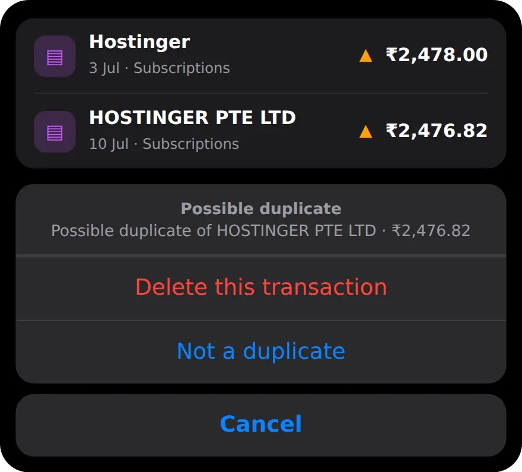

Why do duplicate transactions happen?
Because the same payment reaches your tracker by two routes. The most common one is logging a payment on the day and importing it again later from your bank.
Other routes are just as ordinary. Two payment history screenshots overlap, so the last rows of one are the first rows of the next. A bank SMS gets pasted twice. A subscription or EMI is added automatically as a recurring payment, and then shows up again in your statement, sometimes for a slightly different amount and under a longer name, such as "HOSTINGER PTE LTD" instead of "Hostinger".
How do duplicates skew your budget?
Every duplicate counts as spending, so your monthly total, your category totals and your limits all read higher than the truth.
Three ₹340 food orders logged twice add ₹1,020 to Food that you never spent. A ₹2,478 subscription counted twice adds another ₹2,478. On a ₹30,000 monthly limit, that extra ₹3,498 is enough to move you from 70% to past 80% and set off a warning, or to make a category look like a problem when it is not. Because the error only ever adds, duplicates make every month look worse than it was.
How do you spot a duplicate transaction?
Look for the same amount, paid to the same merchant, on the same or the next day. Then check whether you really paid twice.
Merchant names rarely match exactly. The same shop can appear in short form in one place and as a full company name in another, and statement amounts can differ by a few rupees from what you typed. Not every repeat is a mistake, either: two cups of coffee on the same afternoon are two real payments. When in doubt, compare against your bank statement or your UPI app before you delete anything.
How does MoneyOS catch duplicates when you import?
Every import lands in a review list first. Likely repeats are flagged and left unticked, so nothing is saved twice unless you choose it. Five steps:
- Import as usual. Bring in screenshots, a statement, a CSV or a pasted SMS. Everything lands in the Review import list before anything is saved.
- Read the header note. If several screenshots overlapped, the list says how many duplicate rows across screenshots were excluded.
- Check the duplicate? rows. Rows that match something you already logged are tagged duplicate? and left unticked. Tick one back if it really is a second payment.
- Answer any Duplicate? notice. If a row looks like an EMI, SIP or subscription you already have this month, pick Keep this, Keep existing or Keep both.
- Clear the amber signs later. On Home, tap the amber warning sign on a flagged row, then choose Delete this transaction or Not a duplicate.
A row is tagged duplicate? when it moves money in the same direction, for exactly the same amount, within a day of something you already logged, and the merchant names look alike. Read how to import UPI payments from screenshots or a bank statement PDF.
Overlapping screenshots are the one case MoneyOS handles for you. When the same row appears in two screenshots of one import, with the same amount, a similar merchant and the same day, only one copy is kept and the list says how many were excluded. If you really paid the same merchant the same amount twice that day, check that count and add the second payment yourself.
Recurring payments get a wider check. If an imported row looks like an EMI, SIP or subscription you already have that month, within 2% or ₹5 of the amount, whichever is wider, the row asks whether it is a duplicate. Keep this replaces the existing entry with the imported one, Keep existing skips the import, and Keep both saves the two. More on tracking subscriptions.
How do I find duplicates already in my ledger?
Look for the amber warning sign. MoneyOS checks your saved transactions for likely repeats and marks them on Home and in the day and category views.
Two entries are marked when they move money in the same direction, in the same calendar month, with similar names and amounts within that same 2% or ₹5 margin. Tap the sign to see which entry it matches, then choose Delete this transaction or Not a duplicate. Not a duplicate is remembered, so the same entry is never flagged again.

All of this matching happens on your iPhone, with no account and no bank login. See what stays on your phone.
Frequently asked questions
Why do I have duplicate transactions?
Usually because the same payment reached your tracker twice: typed in on the day and then imported from a statement, caught in two overlapping screenshots, or added once as a recurring payment and again from the bank.
How do duplicates affect my budget?
Every duplicate counts as spending. Your monthly total, category totals and limits all go up, so a limit can warn you at 80% when you have really spent less.
How does MoneyOS find duplicates?
It compares direction, amount, merchant name and date. Imports are checked against each other and against what you already logged, and the whole ledger is checked again for repeats within the same month.
Will MoneyOS delete a duplicate on its own?
Only repeated rows across overlapping screenshots in one import are dropped, and the review list says how many. Everything else is flagged for you to decide.
What if two identical payments are both real?
Tick the row back in the review list, choose Keep both, or tap Not a duplicate. MoneyOS remembers Not a duplicate and will not flag that entry again.
Is MoneyOS free?
Yes. The whole app is free, with no subscription, no ads and no in-app purchases. There is no account and no bank login, and your data stays on your iPhone.